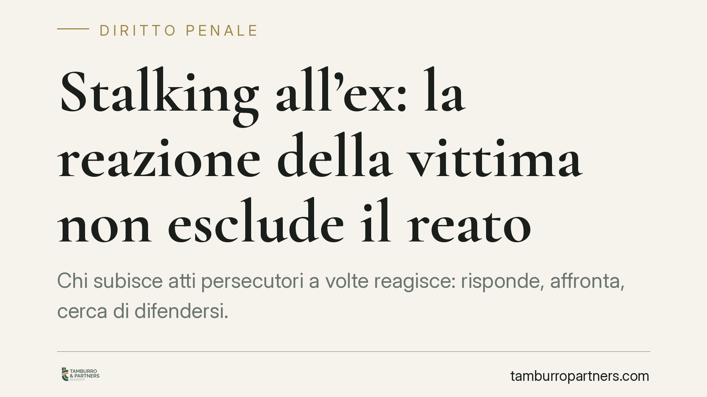

Stalking all'ex: la reazione della vittima non esclude il reato
Chi subisce atti persecutori a volte reagisce: risponde, affronta, cerca di difendersi. La Cassazione chiarisce che questa reazione non annulla il reato di stalking, ma può confermare lo stato d'ansia della vittima. In più, la violazione delle misure cautelari pesa sull'accesso ai benefici processuali. Vediamo cosa stabilisce la pronuncia e quali conseguenze pratiche comporta.

Il caso
La vicenda riguarda la condanna di un ex convivente per atti persecutori nei confronti dell'ex partner, con un figlio minore coinvolto nel contesto familiare. La difesa aveva sostenuto che la vittima, reagendo attivamente alle condotte dell'imputato, non si trovasse in quello stato di soggezione tipico dello stalking. La Corte di Cassazione penale (sezione V) ha respinto l'argomento e confermato la responsabilità.
*Nota sugli estremi: in questa sede la pronuncia è richiamata per il principio di diritto affermato. Gli estremi numerici vanno verificati sulla fonte ufficiale prima di qualsiasi utilizzo processuale.*
Inquadramento normativo
Il reato di atti persecutori è disciplinato dall'art. 612-bis del codice penale. Punisce chi, con condotte reiterate, minaccia o molesta una persona in modo da provocare uno dei tre eventi alternativi previsti dalla norma:
- un perdurante e grave stato di ansia o di paura;
- un fondato timore per l'incolumità propria, di un prossimo congiunto o di persona legata da relazione affettiva;
- un'alterazione delle proprie abitudini di vita.
Basta il verificarsi di uno solo di questi effetti perché il reato sia integrato. Non è richiesto che la vittima resti passiva o paralizzata: lo stato d'ansia può manifestarsi anche in forme attive di difesa o di contrasto.
Su questo punto si innesta il principio centrale della decisione: la reazione difensiva della vittima non esclude il reato. Anzi, può costituire un indizio dello stato d'ansia patito, perché chi si attiva per proteggersi dimostra proprio di percepire la condotta come fonte di pericolo o di disagio significativo. Interpretare la reazione come prova di "serenità" ribalterebbe la logica della tutela.
Le misure cautelari e i benefici
La pronuncia tocca anche gli effetti della violazione delle misure cautelari disposte a protezione della vittima (ad esempio il divieto di avvicinamento). Chi viola tali prescrizioni manifesta una persistenza della condotta che incide sulla valutazione della gravità.
Sul piano della particolare tenuità del fatto (art. 131-bis c.p., causa di non punibilità per i casi meno gravi), occorre precisione. La preclusione non deriva automaticamente dalla sola violazione cautelare: l'art. 131-bis, nella sua formulazione, esclude l'applicabilità per determinate ipotesi e tiene conto della condotta complessiva. Nei fatti, un comportamento reiterato e aggravato dalla violazione di un provvedimento del giudice difficilmente si concilia con il giudizio di tenuità, perché smentisce sia l'occasionalità sia la lieve offensività richieste dalla norma.
In sintesi: la violazione delle cautele può precludere l'accesso ai benefici previsti per i casi meno gravi, ma la valutazione resta ancorata al caso concreto e al testo normativo, non a un automatismo.
Implicazioni pratiche
Per chi subisce condotte persecutorie, il messaggio è chiaro: difendersi, documentare e segnalare non indebolisce la posizione processuale. La reazione non "cancella" il reato né riduce la credibilità del racconto.
Per chi è destinatario di misure cautelari, ogni violazione produce effetti che vanno oltre il singolo episodio: incide sulla qualificazione della condotta e sulla possibilità di accedere a trattamenti più favorevoli.
Quando nel contesto è coinvolto un figlio minore, la vicenda penale si intreccia con i profili del diritto di famiglia: affidamento, regolazione dei contatti e provvedimenti di protezione seguono logiche autonome ma collegate.
Cosa fare in concreto
- Documenta ogni episodio: messaggi, chiamate, appostamenti, testimoni. Conserva date e contenuti in modo ordinato.
- Segnala tempestivamente le condotte all'autorità, senza attendere un'escalation.
- Rispetta rigorosamente le misure cautelari se ne sei destinatario: ogni violazione aggrava la posizione.
- In presenza di figli minori, è opportuno coordinare la tutela penale con gli strumenti del diritto di famiglia, valutando i provvedimenti di protezione più adeguati.
- Richiedi una valutazione professionale sul singolo caso: la rilevanza del 131-bis e dei benefici dipende dalle circostanze concrete.
---
Contributo informativo a cura di Tamburro & Partners Avvocati - Avv. Giuseppe Tamburro. Non costituisce parere legale.
Ogni condominio ha una storia a sé.
Se gestisci un'amministrazione e vuoi un confronto su una specifica questione condominiale, scrivi allo studio. Ti rispondiamo entro un giorno lavorativo.